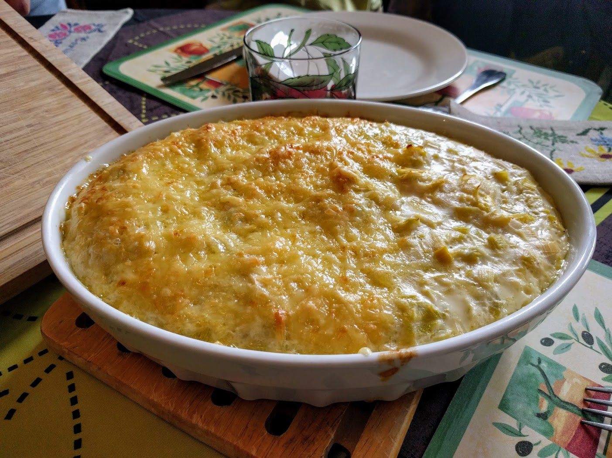

..@..♦.D.

|
Présentation 
|
Blog
|
Recettes
|

Version gratinée (voir variante 3 ci-dessous).
Pour 4 personnes :
Variante : Pour que le mélange se tienne mieux, on peut laisser refroidir le mélange, rajouter un œuf, bien mélanger, et réchauffer le tout avant de servir.
Variante 2 : On peut aussi rajouter des lardons.
Variante 3 : On peut se servir d'une fondue de poireaux pour faire un gratin : dans ce cas, ne cuire que 20 minutes, mettre le mélange dans un plat à gratin, parsemer de gruyère râpé, de chapelure, de petits bouts de beurre, et enfourner 5-10 minutes dans un four à 180°C (thermostat 6), jusqu'à ce que ça soit bien doré.